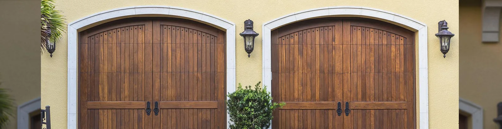
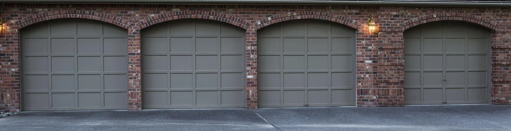

Garage Door Essentials · Eagle, IdahoYOUR DAY
YOUR DAY
SHOULDN’T
STOP HERE.
Repair, openers, and new doors. Find a clear starting point when your garage door needs attention.
Find your next step ↗
REPAIR / REPLACE / MAINTAINGet moving again
What brings you here?
Choose a starting point
Contact the team about a repair. Describe the symptoms; leave spring and cable work to a professional.
Repair or replaceFunction comes first.
Function comes first.
Style comes with it.

A door that suits the home.
Explore replacement options after confirming size, operation, and the needs of the space.
Discuss a new door ↗